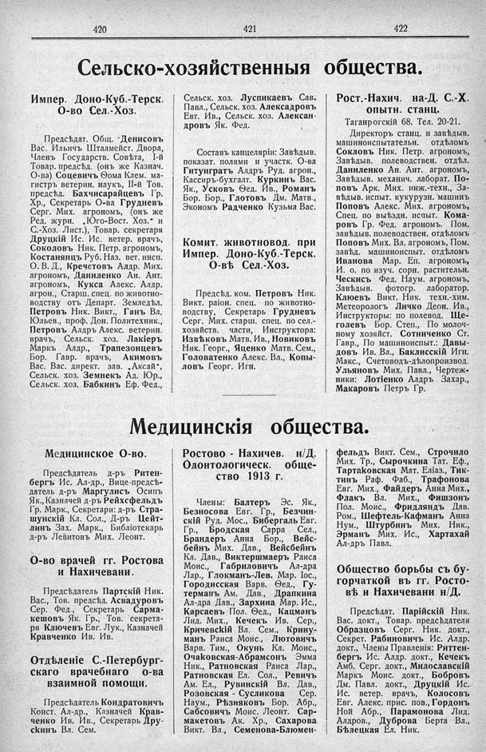

Лист источника 272
Скан

Распознанный текст
420
421
422
Сельско-хозяйственныя общества.
Импер. Доно-Куб.-Терск.
О-во Сел.-Хоз.
Предсѣдат. Общ. Денисовъ
Вас. Ильичъ Шталмейст. Двора,
Членъ Государств. Совѣта, I-й
Товар. предсѣд. (онъ же Казнач.
О-ва) Соцевичъ Ѳома Клем. ма-
гистръ ветерин. наукъ, II-й Тов.
предсѣд. Бахчисарайцевъ Гр.
Хр., Секретарь О-ва Грудневъ
Серг. Мих. агрономъ, (онъ же
Ред. журн. „Юго-Вост. Хоз.“ и
С.-Хоз. Лист.), Товар. секретаря
Друцкій Ис. Ис. ветер. врачъ,
Соколовъ Ник. Петр. агрономъ,
Костанянцъ Руб. Наз. вет. инсп.
О. В. Д., Кречетовъ Алдр. Мих.
агрономъ, Даниленко Ан. Ант.
агрономъ, Кукса Алекс. Алдр.
агрон., Старш. спец. по животно-
водству отъ Департ. Земледѣл.
Петровъ Ник. Викт., Ганъ Вл,
Юльев., проф. Дон. Политехник.,
Петровъ Алдръ Алекс. ветерин.
врачъ, Сельск. хоз. Лакіеръ
Маркъ Алдр., Трапезонцевъ
Бор. Гавр. врачъ, Акимовъ
Вас. Вас. директ. зав. „Аксай“,
Сельск. хоз. Земнекъ Ад. Юр.,
Сельск. хоз. Бабкинъ Еф. Фед.,
Сельск. хоз. Луспикаевъ Сав.
Павл., Сельск. хоз. Алексадровъ
Евт. Ив., Сельск. хоз. Алексан-
дровъ Як. Фед.
Составъ канцеляріи: Завѣдыв.
показат. полями и участк. О-ва
Гитунгратъ Алдръ Руд. агрон.,
Кассиръ-бухгалт. Куркинъ Вас.
Як., Усковъ Ѳед. Ив., Романъ
Бор. Бор., Глотовъ Дм. Матв.,
Экономъ Радченко Кузьма Вас.
Комит. животновод. при
Импер. Доно-Куб.-Терск.
О-вѣ Сел.-Хоз.
Предсѣд. ком. Петровъ Ник.
Викт. раіон. спец. по животно-
водству, Секретарь Грудневъ
Серг. Мих. старш. спец. по сел.-
хозяйств. части, Инструктора:
Извѣковъ Матв. Ив., Новиковъ
Ник. Георг., Яценко Матв. Сем.,
Головатенко Алекс. Вл., Копы-
ловъ Георг. Игн.
Рост.-Нахич. на-Д. С.-Х.
опытн. станц.
Таганрогскій 68. Тел. 20-21.
Директоръ станц. и завѣдыв.
машиноиспытательн. отдѣломъ
Сокловъ Ник. Петр. агрономъ,
Завѣдыв. полеводствен. отдѣл.
Даниленко Ан. Ант. агрономъ,
Завѣдыв. механич. лаборат. По-
повъ Арк. Мих. инж.-техн., За-
вѣдыв. испыт. кукурузн. машинъ
Поповъ Алекс. Мих. агрономъ,
Спец. по выѣздн. испыт. Кома-
ровъ Гр. Фед. агрономъ. Пом.
завѣдыв. полеводствен. отдѣломъ
Поповъ Мих. Вл. агрономъ, Пом.
завѣд. машиноиспыт. отдѣломъ
Иванова Мар. Еп. агрономъ,
И. о. по изуч. сорн. растительн.
Ческисъ Фед. Наум. агрономъ,
Завѣдыв. фотогр. лаборатор.
Клюевъ Викт. Ник. техн.-хим.
Метеорологъ Личко Деон. Ив.,
Инструкторы: по полевод. Ще-
голевъ Бор. Степ., По молоч-
ному хозяйст. Сотниченко Ст.
Гавр., По машиноиспыт.: Давы-
довъ Ив. Вл., Баклисскій Игн.
Макс., Счетоводъ-дѣлопроизвод.
Ульяновъ Мих. Павл., Чертеж-
ники: Лотіенко Алдръ Захар.,
Макаровъ Петръ Гр.
Медицинскія общества.
Медицинское О-во.
Предсѣдатель д-ръ Ритен-
бергъ Ис. Ал-др., Вице-предсѣ-
датель д-ръ Маргулись Осипъ
Як., Казначей д-ръ Рейхсфельдъ
Гр. Марк., Секретари: д-ръ Стра-
шунскій Кл. Сол., Д-ръ Цейт-
линъ Зах. Марк., Библіотекарь
д-ръ Левитовъ Мих. Леонт.
О-во врачей гг. Ростова
и Нахичевани.
Предсѣдатель Партскій Ник.
Вас., Тов. предсѣд. Асвадуровъ
Сер. Фед., Секретарь Сарма-
кешовъ Як. Гр., Тов. секрета-
ря Ключевъ Евг. Лук., Казначей
Кравченко Ив. Ив.
Отдѣленіе С.-Петербург-
скаго врачебнаго о-ва
взаимной помощи.
Предсѣдатель Кондратовичъ
Конст. Ал-др., Казначей Крав-
ченко Ив. Ив., Секретарь Дру-
скинъ Вл. Сем.
Ростово - Нахичев. н/Д.
Одонтологическ. обще-
ство 1913 г.
Члены: Балтеръ Эс. Як.,
Безносова Евг. Гр., Безчин-
скій Руд. Мос., Бибергаль Евг.
Гр., Бродская Сарра Сел.,
Брандеръ Анна Бор., Вейс-
бейнъ Мих. Дав., Вейсбейнъ
Кл. Дав., Виктершмаеръ Раиса
Моис., Габриловичъ Ал-дра
Лар., Глокманъ-Лев. Мар. Іос.,
Городисская Варв. Ѳед., Гу-
терманъ Ам. Дав., Драпкина
Ал-дра Дав., Зархина Мар. Ис.,
Карсаевъ Пол. Ѳед., Кацманъ
Лид. Мих., Кечекъ Ив. Сер.,
Кричевскій Вл. Сем., Крину-
манъ Раиса Моис., Лютовичъ
Варв. Тим., Окунь Кл. Моис.,
Очаковская-Абрамсонъ Эмма
Ник., Ратновская Раиса Лар.,
Ратновская Ел. Сол., Ревичъ
Ам. Ел., Рувинскій Вл. Дав.,
Розовская - Сусликова Сер.
Наум., Рѣзняковъ Бор. Абр.,
Сабсовичъ Моис. Леонт. Сар-
макетовъ Ак. Хр., Сахарова
Викт. Вл., Семенова-Блюмен-
фельдъ Викт. Сем., Строчило
Мих. Тр., Сырочкина Тат. Еф.,
Тартаковская Мат. Еліаз., Тик-
тинъ Раф. Фаб., Трафонова
Евг. Мих., Файдеръ Анна Мих.,
Флакъ Вл. Мих., Фишзонъ
Пол. Моис., Фридляндъ Дав.
Ром., Шефтель-Кафманъ Анна
Нум., Штурбинъ Мих. Ник.,
Эрманъ Мих. Ис., Хартахай
Ал-дръ Павл.
Общество борьбы съ бу-
горчаткой въ гг. Росто-
вѣ и Нахичевани н/Д.
Предсѣдат. Парійскій Ник.
Вас. докт., Товар. предсѣдателя
Образцовъ Серг. Ник. докт.,
Секрет. Рабиновичъ Ис. Алдр.
докт., Члены Правленія: Риттен-
бергъ Ис. Алдр. докт., Кечекъ
Амб. Серг. докт., Милославскій
Маркъ Моис. докт., Бобровъ
Дм. Павл. докт., Друцкій Ис.
Ис. ветер. врачъ, Колосовъ
Евг. Алекс. прис. пов., Гордонъ
Ной Абр., Парамонова Лид.
Алдров., Дуброва Берта Вл.,
Бѣлецкая Ел. Ник.